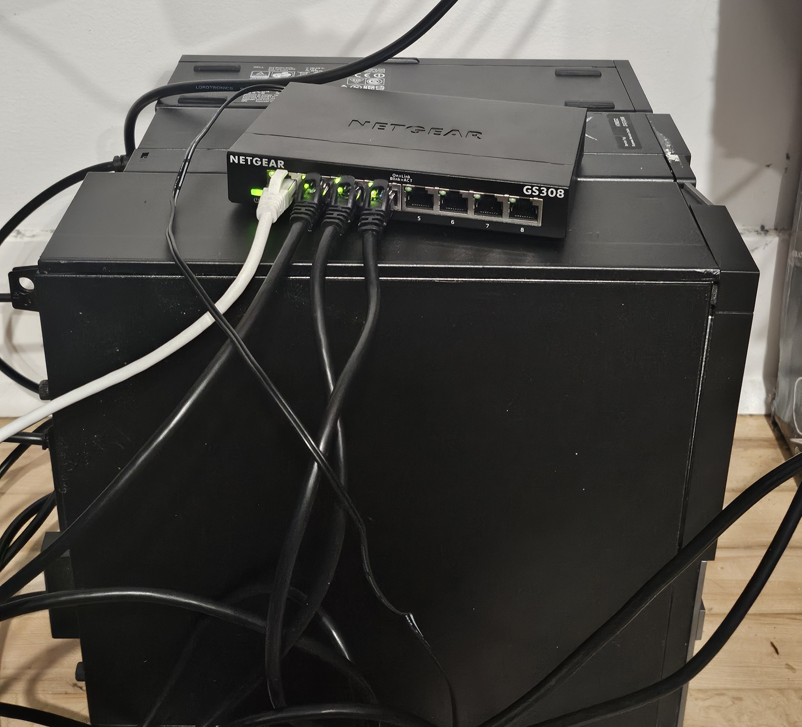

Building a Beowulf Cluster: Part 1
A Beowulf cluster is a high performance computing system consisting of consumer grade technology which are linked by a local network that executes parallel jobs. It works by having a (usually single) head node to manage and distribute parallel computations and the compute nodes executing them. This is a fun way to reuse old electronics and learn new things. All you need is:
- 2 or more computers
- 1 has to be the head node, the rest are compute nodes
- 1 Network switch
- 1+number of computers Ethernet cords
- 1 Thumb drive
Michigan State has the Surplus Store which sells a ton of second hand things including PCs/workstations, cords, networking gear, etc if you want electronics for cheap.
Below is what my cluster currently looks like, ignore the bad cable management:

The network switch I am using is the Netgear GS308 because it has 8 ports, which is way more than I need. This allows me to expand later if I ever need more nodes. One of the nodes I know for sure is a Dell Optiplex 3020 with an i5 with 3 available cores. The other 2 are probably some Dell Precision model also with an i5 with 3 cores. Hardware is a huge bottleneck here since these things only support up to 16GB of DDR3 RAM. Someday I will replace the motherboard, RAM and CPU of the head node at least. I'll be honest, I only made these the nodes because they were under $60 at the Surplus Store.
In terms of software, I used Rocky Linux as my Operating System. When I previously did this I used CentOS 10 Stream, but I wanted to try something else out. You can use any type of enterprise Linux distribution, really. For job allocation, we are installing my very own KlaudScheduler which depends on OpenMPI.
Basic Node Setup
The following are instructions needed for both the head node and the compute nodes.
First install Rocky Linux on all of them using the thumb drive as a bootable medium. I personally like to use balenaEtcher for flashing OS images. I would recommend using the following options:
- Head Node: Server with GUI
- Compute Nodes: Minimal Install
- All: Enable Root User
- Do not make user accounts yet
Connect the Ethernet cables to each node and then to the network switch. Connect one of the cords from the switch to the router. This ensures you can connect all of the devices to the local network.
After the install make user accounts: alice and master. You can do this using the commands below:
sudo useradd master
sudo passwd master
sudo useradd alice
sudo passwd alice
master will be used for administrative purposes and alice will be a standard user account. This will matter more when we get permissions squared away. You need the same account on all nodes because OpenMPI uses SSH for starting processes under the identity of the user submitting the job. Make sure the UIDs are the same across nodes to maintain file ownership and permissions. You can edit UIDs with the following command:
sudo usermod -u NEW_UID USERNAME
Then, install the following packages:
sudo dnf install nfs-utils gcc gcc-c++ gdb make openmpi openmpi-devel
OpenMPI also comes with the package for environment modules as well. To activate both we need to enter the following commands:
source /etc/profile.d/modules.sh
module load mpi/openmpi-x86_64
Then to make sure you append these commands to your ~/.bashrc to ensure they get run on startup.
Enable Static IPs
A Static IP address is a permanent address used to access and identify computers. You can have one for public web usage assigned to your router and a local one for single devices on your home network. Specifically, we are looking to edit the local static IP, the one in the 192.168.x.x range. This is more of a me thing, but I like setting mine to 192.168.x.100, 101, ..., 10n for the head and compute nodes. Make sure you set the IPs to the correct range or it will mess up your wifi. Also, make sure you use ones that are out of your router's DHCP pool, or the router may hand the same address to another device. Enter the following command:
sudo nmcli con mod CONNECTION_NAME ipv4.method manual ipv4.addresses 192.168.x.10n/24
ipv4.gateway 192.168.x.1 ipv4.dns "8.8.8.8,1.1.1.1" connection.autoconnect yes
- 192.168.x.10n/24 is what we are setting the static IP to
- 192.168.x.1 is the IP gateway
- The wifi router is the gateway that connects your computer to wifi access. Your devices send data to the router using the IP gateway.
- 8.8.8.8 and 1.1.1.1 are public DNS resolvers
- A DNS or a Domain Name System changes website names into numbers readable by computers
- The 1.1.1.1 DNS is provided by Cloudflare and people say it's the fastest one
- 8.8.8.8 is provided by Google
Now you can edit this in nmtui which provides a way better UI:
sudo nmtui
Then click "Edit a Connection" and select: "require IPv4 addressing for this connection". Restart the node or the wifi to see the changes, then use:
ip addr show
ping google.com
to see if the changes applied and that your wifi still works.
Edit the /etc/hosts file to make aliases for the IPs instead of having to type out the whole thing each time. Do this for every node. This is what mine looks like:
192.168.0.100 master
192.168.0.101 node1
192.168.0.102 node2
Passwordless SSH and shared storage
The following instructions are done only for the head node.
We need to enable passwordless ssh between the accounts on the master with the other nodes. I'm sure you don't want to have to log into a bunch of accounts each time you run a job.
- For example: master@headnode -> master@node1, master@headnode -> master@node2, ..., master@headnode -> master@noden
Do the following commands on the head node to enable this:
su - master
ssh-keygen -t ed25519
ssh-copy-id master@node1
ssh-copy-id master@node2
...
ssh-copy-id master@noden
su - alice
ssh-keygen -t ed25519
ssh-copy-id alice@node1
ssh-copy-id alice@node2
...
ssh-copy-id alice@noden
We need a way to share storage across devices so the nodes can see and execute each others files. A Network File System or NFS is a great way to do this, it's a networking protocol that lets you access and manage files on a remote computer as if they were stored on your own local computer. To actually set it up first enable/start the system:
sudo systemctl enable --now nfs-server
We need to make a home directory that contains contents from the master and alice accounts (and more future accounts):
sudo mkdir -p /home
We need to edit the /etc/exports file to allow this directory to be shared on the local network. Append the following to it:
/home node1(rw,sync) node2(rw,sync) ... noden(rw,sync)
Apply the changes and check if it works:
sudo exportfs -rav
sudo exportfs -v
If you see /home show up you're all good. You can also give the NFS a firewall:
sudo firewall-cmd --permanent --add-service=nfs
sudo firewall-cmd --reload
sudo firewall-cmd --list-services
If you see nfs printed after list-services you're all good, although you might need a reboot.
Now for all of the compute nodes do the following to configure NFS. First make the /home mount point if you don't have it already:
sudo mkdir -p /home
sudo mount -t nfs master:/home /home
To make this mount persistent you need to add it to the /etc/fstab file. Append this to the file:
master:/home /home nfs defaults,_netdev,nofail 0 0
Reboot the system to see if it works and to further test add a file in alice's directory on the head node and see if it's there on each node. If this works we are ready for the job scheduler.
Run this on compute nodes if SSH key login fails from the NFS home. Rocky Linux enforces SELinux by default.
sudo setsebool -P use_nfs_home_dirs 1
Make sure that mpi is working correctly with ssh with the following command:
mpirun -np 4 --host node1,node2 hostname
If this does not work, consider turning the NFS firewall off. This is a home Beowulf cluster, how likely is it that someone attacks you?
KlaudScheduler
A cluster scheduler manages and distributes computing resources between multiple jobs, the most popular being SLURM. KlaudScheduler is the one I made, so I'll walk through how to set that up.
git clone https://github.com/coldmayo/KlaudScheduler.git
cd KlaudScheduler
Create the ~/.klaudrc file and copy this in it, remember to do this for each account:
# Set priority system
# Options: FIFO, SJF, BF
set-priority FIFO
set-priority-lottery false
set-priority-aging true
# For populating nodes.json, specify TCP or SSH
# If your ISP blocks IP forwarding, use SSH (recommended)
set-nodes-strat SSH
set-dir /set/working/directory
Run the Makefile in the headNode directory to create the needed executables:
- dispatch
- Used for resource distribution
- get-nodes
- Running this generates rankfile.txt and nodes.json
- klaudrun
- ktrack
This Makefile installs them directly to /usr/local/bin so these become system-wide executables.
To start the scheduler up first run the get-nodes command to generate nodes.json and the rankfile.txt
- rankfile.txt is a file that maps processes (or ranks) to cpus across the cluster
- nodes.json is a file that contains the names of all CPUs and their status (if they're free or not)
Then you have to run the dispatcher using the dispatch command. Now you can use klaudrun to submit jobs. You can use .klaud files to do so or just use the .c executable with the comments
klaudrun --file=pingus.klaud
klaudrun --num_cores=6 --command="./hello_mpi"
Now you should be good to run computations yourself!
In the future, I plan on configuring permissions, usergroups, benchmarking, updating hardware, and more.
Other Considerations
To execute C code that uses MPI you must compile using mpicc instead of gcc, for example:
mpicc examples/hello_mpi.c -o examples/hello_mpi
If you are concerned with the head node turning off if idling:
- This is Gnome only, only works if your OS install had a GUI
# Disable idle delay (set to 0 for never)
gsettings set org.gnome.desktop.session idle-delay 0
# Disable automatic screen locking
gsettings set org.gnome.desktop.screensaver lock-enabled false